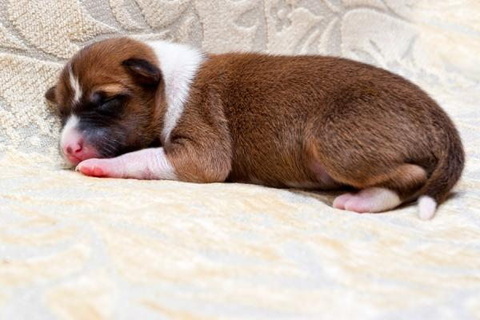
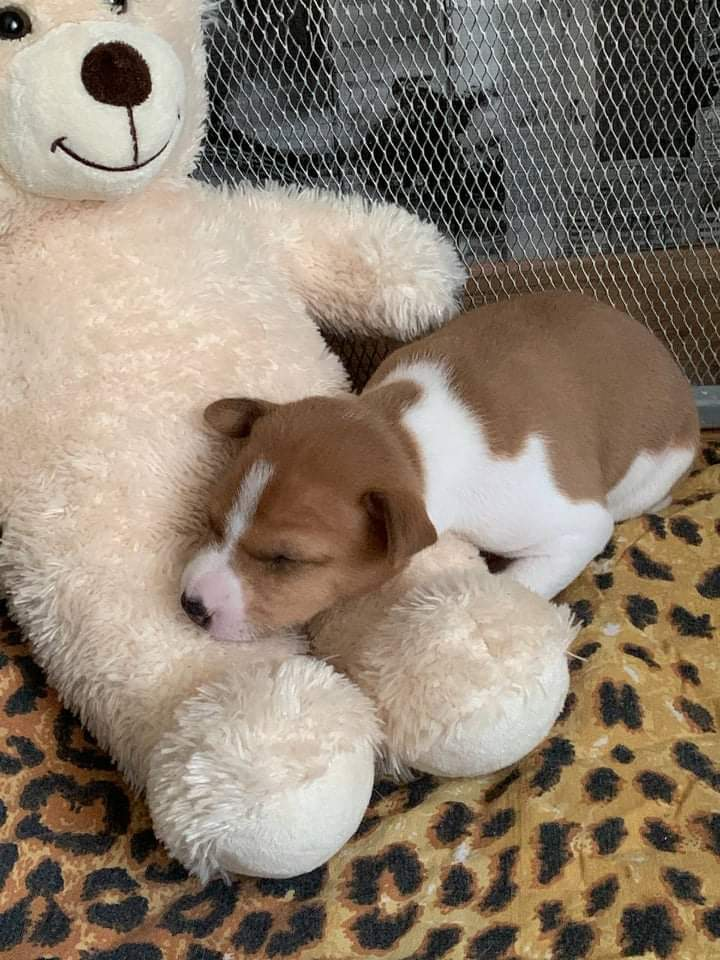
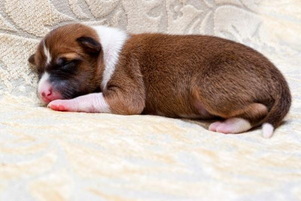
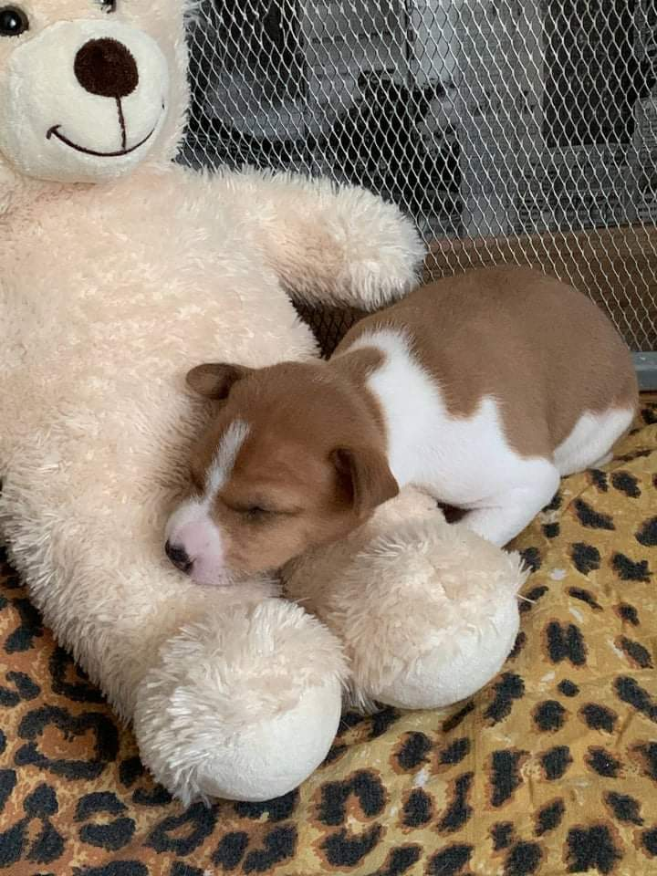
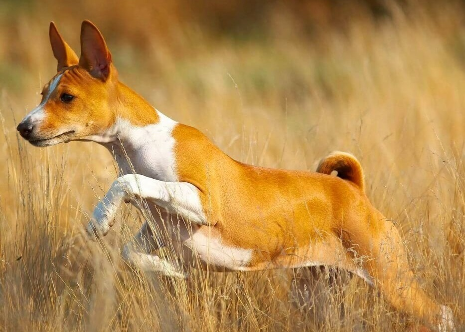
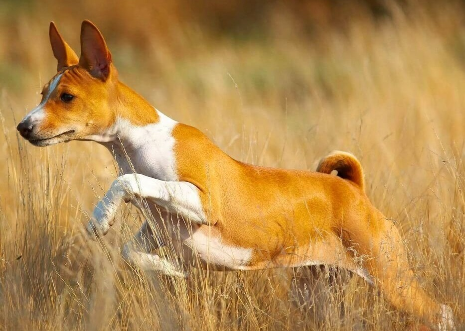

Басенджі
Басéнджі — мисливський собака. Інші назви — соба́ка Занде, лісови́й соба́ка з Ко́нго, бо́нго-тер'є́р, ко́нго-тер'є́р, н'ям-н'ям-тер'є́р. Відомий також як «собака, що не гавкає». Єдина порода собак, котра не гавкає. Дуже рідко собака цієї породи може видавати різноманітні звуки, що не тільки відповідають якійсь ситуації, але й її настрою: бурмотіння, сміх, фиркання, — трель (щось середнє між тірольським наспівом та здавленим сміхом).
Зміст:
Історія
При археологічних розкопках гробниць, п'ятої династії єгипетських фараонів, знайдені мумії Басенджі. В могилі поруч із саркофагом фараона Тутанхамона були знайдені забальзамовані, обгорнуті в дорогі тканини, просякнуті пахощами мумії Басенджі з ошийниками із дорогоцінного каміння. Дехто вважає, що для фараонів Басенджі були більше, ніж собаки для полювання, вони були «живими амулетами», які захищали від чорної магії та чаклунства. І сьогодні аборигени в Центральній Африці вважають, що «M`bwa m`kubwa M`bwa» («той що скаче уверх та вниз», місцева назва цієї породи) можуть захистити свого господаря, забрати негативну енергію.
Перших собак подібних до басенджі привозили з верхів'їв Нілу в подарунок фараонам Стародавнього Єгипту. Але не Єгипет є батьківщиною породи. Предки басенджі жили в племенах мисливців у джунглях Центральної Африки ще задовго до виникнення перших вогнищ цивілізації. На батьківщині породи, в Центральній Африці, лінія породи ніколи не переривалась — її продовжували цінувати за розум, швидкість, магічні властивості, мисливські здібності та мовчазність. Місцеві жителі широко використовують ці здібності для полювання на дрібних тварин, для загону дичини в сітки, переслідування пораненого звіра, а також для полювання на очеретяних щурів — тварин, які важать приблизно стільки ж, скільки і басенджі. «Мовчання» собаки відіграє в такому полюванні величезне значення. Басенджі також застосовуються для супроводу мисливця у джунглях та для попередження його про наближення небезпечних тварин.Експансія породи
У 1895 році дослідники привезли пару таких собак в Англію. Але спроба познайомити «зовнішній» світ з цими істотами не вдалась, так як собаки погано перенесли багатомісячну подорож, захворіли та померли. Офіційний дебют породи відбувся в 1937 році на виставці Крафта, де Басенджі пройшли під екзотичними назвами: «Конго-тер'є» і «Собака джунглів». В тому ж році їх побачила Америка. З приходом басенджі до Європи в XIX столітті, їхня унікальна зовнішність і особливі звуки привернули увагу європейців. Їхні "голоси без голосу" стали об'єктом вивчення для вчених та здивуванням для любителів собак. Цей аспект виділяв їх серед інших порід, роблячи басенджі унікальними супутниками. Адаптація басенджі у Європі відбувалася протягом XIX-XX століть. Вони були активно залучені до нової ролі сторожових собак. Їхня природна недовірливість до незнайомців, дозволила їм ефективно виконувати обов'язки сторожів у міських середовищах Європи. Історія адаптації басенджі у Європі, починаючи з ХІХ століття, показує, як ці собаки використовували свої природні здібності зміни ролі. Вони стали невід'ємною частиною нового культурного та соціального контексту, який вплинув на їх подальший розвиток. Таким чином, адаптація басенджі в Європі з XIX століття не лише призвела до зміни їхньої ролі, а й демонструє, як вони відображають динаміку взаємодії та адаптації між різними культурами та середовищами протягом десятиліть.
Після Другої світової війни Басенджі почали свій тріумфальний похід країнами Європи та Америки. Перш за все це пов'язано з їхніми виставковими успіхами: нечасто фінал «Best-in-show» обходиться без Басенджі.
Опис породи
Серед народів Африки ходить легенда, яка розповідає про те, чому басенджі не гавкають. У ній говориться, що в давнину собаки цієї породи вміли говорити. Але якось вони підслухали таємницю людей і щоб не видати секрету, вихованці вважали за краще замовкнути на віки.
Стандарт породи
- Походження: Центральна Африка.
- Застосування: мисливська собака, компаньйон.
- Класифікація FCI: Група 5. Лайки та примітивні типи. Секція 6. Примітивний тип. Без перевірки робочих якостей.
- Загальний вигляд. Тварина з легкою тілобудовою, тонким кістяком, аристократичного вигляду, високонога, завжди врівноважена, уважна і розумна. Голова у зморшках із стоячими вухами гордо посаджена на склепінчастій шиї. Глибокі груди з вираженим підривом, туго скручений хвіст — гармонійна, збалансована собака, граційна, як газель.
- Ріст і вага. Ідеальна висота в холці: кобелі 43см (17 дюймів), суки 40см (16 дюймів). Довжина корпусу: кобелі 43см (17 дюймів), суки 40см (16 дюймів). Вага для кобелів 11кг (24 фунти), для сук 9кг (21 фунт).
- Поведінка та характер. Собака не гавкає, але не безголоса, її особливий голос — поєднання звуків здавленого сміху та йодлю. Особлива своєю любов'ю до підтримання власної чистоти. Кмітлива, самостійна, віддана та пильна. Може бути недовірлива до сторонніх.
- Голова. Витончена, на лобі проявляються численні зморшки, коли насторожена; зморшки з боків голови бажані, але не надмірні, що переходять у підвіс; зморшки вираженіші у цуценят, але не так явно у триколірних особин через відсутність напівтонів.
- Важливі співвідношення. Морда дещо коротша черепної частини.
- Черепна частина. Череп плаский, добре окреслений та в міру широкий, звужується до мочки носа. Бічні сторони черепної частини поступово звужуються до пащі, вилиці здаються пласкими. Перехід від чола до морди незначний.
- Очі. Від темно-карих до чорно-коричневих, мигдалеподібні, косо поставлені. Краї повік темні.
- Вуха. Невеликі, загострені, стоячі і дещо нахилені вперед, тонкої структури, кінці вух не наближені одне до одного, постава вух широка.
- Мочка носа. Бажано чорна.
- Щелепи і зуби. Щелепи сильні з правильним й повністю ножицеподібним прикусом, тобто верхні зуби щільно перекривають нижні та стоять перпендикулярно щелепам.
- Шия. Міцна та довга, не товста, з вираженим зашийком і дещо наповнена в основі горла, з граційним вигином, що підкреслює зашийок. Добре посаджена у плечах, забезпечуючи голові гордовиту посадку.
- Корпус. Пропорційний. Спина від холки до маклаків (маклаки — виступаючі (у деяких собак) тазостегнові кості майже коло основи хвоста) коротка, пряма. Поперек короткий. Глибока грудина. Ребра випуклі, глибокі і овальні. Пах підібраний.
- Хвіст. Високо посаджений, туго закручений над хребтом і щільно прилягає до крупу одинарним або подвійним кільцем.
- Передні кінцівки. Прямі з тонким кістяком. Помірно широка постава. Плечі косі, м'язисті, не завантажені. Лікті прилягають до грудей. При погляді зпереду лікті направлені строго назад. Передпліччя дуже довгі. П'ястки довгі, прямі та гнучкі.
- Задні кінцівки. Сильні, м'язисті. Коліна з помірно вираженими кутами. Гомілки довгі. Скакальні суглоби не зближені і не вивернуті. Плесна короткі.
- Лапи. Невеликі, вузькі і компактні, з щільними подушечками і склепінчастими пальцями, можуть бути трішки повернуті всередину. Прибулі пальці зазвичай видаляють.
- Рухи. Ноги виносяться прямо вперед швидкими, розгонистими кроками без зусиль.
- Шерстний покрив. Шерсть коротка, гладка і щільна, дуже тонка. Шкіра дуже м'яка.
- Масть. Червона; насичена чорна; триколор (насичено чорний с червоно — рудим підпалом, з плямами над очима, на морді та вилицях); тигрова (чорні смуги на червоно — рудому фоні). При всіх мастях — білі лапи, груди та кінчик хвоста. Білі ноги, відмітина на голові і ковнір не обов'язкові. Білий колір ніколи не повинен переважати над основним забарвленням. Окрас та відмітини повинні бути насиченого кольору, чіткі, добре сформовані, з чіткою межею між чорним та рудим у триколорів та смугами у тигрових.
- Недоліки. Будь-яке відхилення від вказаних вимог розглядається як недолік.
Особливості породи
Цуценята
Новонароджені кутята безпорадні - малюки не бачать, не чують, практично не повзають. Вони тільки попискують, скиглять у пошуках сосків матері. Вміють розрізняти запахи, реагують на тепло та холод. Головні заняття новонароджених басенджів – посмоктувати молоко та спати. Так як це теплолюбні собаки, господар повинен дбати про комфортні умови утримання сім'ї. У приміщенні повинно бути сухо, без протягів і неприємного «різкого» світла.
Розвиток цуценят басенджі по місяцях
- 1 місяць
- 2 місяць
- 3 місяць
- 4 місяць
- 5 місяць
- 6 місяць
- 7-12 місяць
До 10-14 дня життя у кутят триває неонатальний, вегетативний етап розвитку. Вони адаптуються до навколишнього середовища, його звуків, запахів. Вже в перший тиждень життя, малюк – пружна щільна грудочка з блискучою шерсткою. Кутята стають дуже активними - прагнуть пробратися до молочних сосків. За їхньою прудкістю заводчики судять, хто буде лідером, «бійцем-мисливцем», а хто слухняним домашнім собакою. 10-17 день – короткий, але важливий перехідний період. У кутят вже відкриті очі, вуха, прорізаються молочні зуби. Світ ще цікавіший – місячне щеня прагне його скоріше дослідити.
 



Цуценята стають самостійними: їх переводять на розм'якшений прикорм, малюки самі справляють потребу, не залежать від матері. Продовжують активно освоювати світ, навчаються взаємодіяти із ним.
Тримісячні цуценята знаходять нову родину. З перших днів їх оточують турботою – важливо, щоб малеча навчилася довіряти людям. Але господар пам'ятає, що басенджі норовливі і вперті. Тому починає систематично виховувати, розучує з ним перші команди.
Цуценя повністю звикає до господаря, нового будинку. Він вже їсть твердий корм – частоту годівель поступово скорочують, оскільки розвиток собаки починає загальмовуватись. Басенджі привчають до повідця, займаються з ними на собачих майданчиках.
Дресирування підрослого цуценя переводять на складніший рівень. Він вступає у підлітковий вік – стає більш упертим та неслухняним. Терпіння та твердість – головні помічники власника.
Піврічні басенджі зовні схожі на дорослих псів. Вони знають команди, своє ім'я, привчені до повідця. Розуміють, хто для них господар, яке місце посідають у його родині.
 

У такому віці психологічний, фізичний розвиток молодих собак завершується. Це період статевого дозрівання – у дівчаток починаються перші тічки.
Догляд за цуценятами басенджі
Догляд за цуценям басенджі досить простий, тому що собака гладкошерста. Вона не має запаху. Навіть якщо собаці довелося пробігтися під дощем, привівши його додому, ви виявите, що від нього немає запаху. Однак уваги завжди вимагають пазурі та вуха. Зазвичай пазурі сточуються, коли собака гуляє вулицею. Але якщо собака буває на вулиці рідко через будь-які обставин, їх треба спилювати. Протирайте вуха собаки ватними паличками, щоб у неї не було жодних захворювань. Вчасно відвідуйте ветеринара та робіть усі необхідні щеплення. Догляд за басенджі після народження такий самий, як і за цуценятами інших порід. Уважність, чуйність, належна увага, правильне харчування.
Зростання, набір маси конго-тер'єрами завершується по досягненню ними 1 року. Але приблизно до 14-15 місяців пес продовжує розвиватися - стає потужнішим, м'язистим.Виховання та дресерування цуценя
Найчастіше нові власники цуценят хвилюються, що дресирування з перших днів буде надмірним стресом для собаки. Таке можливе лише у разі використання застарілих жорстких методик, а за правильного підходу навчання з перших днів буде навпаки дуже корисним, оскільки дозволяє відразу ж встановити контакт із цуценям та здобудувати довірчі відносини.
Харчування
Годування цуценят
Режими прийому їжі для цуценят: як тільки цуценя відмовилося від материнського молока, його потрібно годувати 6 разів на день до тримісячного віку; до півроку собаку годують по 4 рази на добу; з віку 6 місяців можна перевести на триразове харчування; щеня, що підросло до 10 місяців, можна годувати вже 2 рази на день.
Натуральна їжа для цуценя: кефір, сир, натуральний йогурт без добавок (містять кальцій для міцних кісток та суглобів) – у невеликій кількості; з круп - рис і гречку (добре засвоюються, не викликають алергію); овочі та фрукти (джерело клітковини та вітамінів): кабачок, броколі, морква, шпинат, яблука.| Таблиця розвитку (середні показники розвитку цуценят басенджі) | ||||||||
| Місяць | 1 | 2 | 3 | 4 | 5 | 6 | 9 | 12 |
|---|---|---|---|---|---|---|---|---|
|
|
1,2-1,4 | 2,2-2,8 | 4-5,1 | 5-6 | 6-7 | 7-9 | 9-9,5 | 9-12 |
Пам'ятка для власника!
Миски повинні стояти у спеціально відведеному місці. Годування здійснюється в один і той же час. Чиста вода має бути в постійному доступі.
Необхідні продукти:
- сире м'ясо (нежирна яловичина, птиця без кісток, риба)
- каші
- овочі
- фрукти (не кислі)
- зелень, рослинна олія
- варені яйця (не більше 1 разу на тиждень)
- кисломолочні продукти
| Таблиця середніх показників ваги та висоти | ||||||||
| Хлопчики | Дівчатка | |||||||
|---|---|---|---|---|---|---|---|---|
| Вага: | 10-12 | 9-11 | ||||||
|
|
41-44 | 38-41 | Невеликі відхилення від середніх показників в обидві сторони – нормальне явище, індивідуальний розвиток тварини. | |||||
Категорично не можна давати басенджі:
- відходи зі столу
- солодощі
- рибні та трубчасті кістки
- смажене
- жирне
- свинину
- борошняне
- сира річковову рибу
- будь-які зіпсовані чи несвіжі продукти
- ковбасні вироби